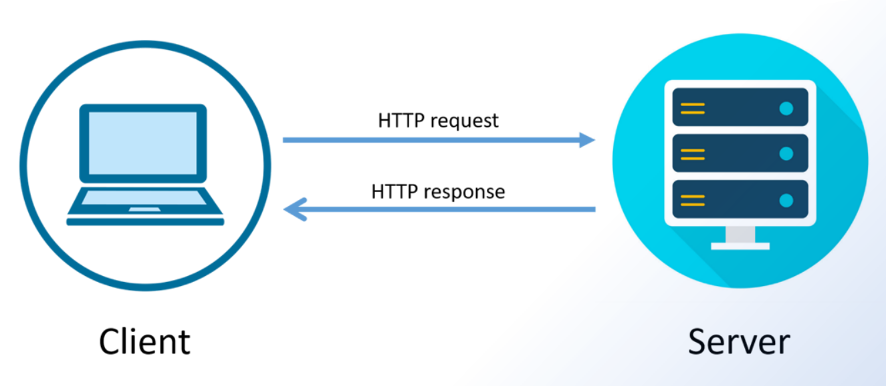
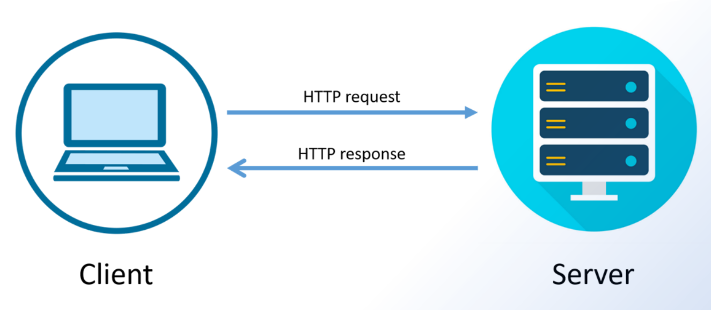

Preguntas y referencias sobre protocolo HTTP
Sección de referencias de interés
Enlaces de referencia sobre HTTP (abrir en nuevas pestañas):
Sección de Preguntas sobre HTTP
-
¿Sobre qué protocolo binario está montado el protocolo HTTP?
Está montado sobre el protocolo TCP, el cual resuelve las solicitudes cliente-servidor.
-
¿Cuáles son los clientes HTTP y los servidores HTTP más utilizados?
Del lado del cliente se encuentra el navegador y por el lado del Servidor encontramos los Web Server
-
¿Qué verbos admite un comando en el requerimiento HTTP?
Los verbos que admite son: GET - PUT - DELETE - POST - CONNECT
-
¿Qué contenido lleva el body de un requerimiento HTTP?
El body puede contener datos en cualquier formato, por ejemplo:
• Datos ingresados en campos de un formulario
• Archivos enviados en un proceso de upload
-
¿Qué diferencia existe entre un URL y un URI?
El campo URL contiene al conjunto nombre de referencia + la URI, y este último es el que hace referencia a la ubicación de un recurso y sus valores
Ejemplo: http://nombreHost.dominioHost:puerto + URI
-
¿En qué variables quedan almacenados datos de las respuestas HTTP?
El Header contiene toda la información relativa a la codificación de los mensajes (metadatos)
-
¿Qué significa Virtual hosting?
Virtual hosting es el término que se utiliza para utilizar múltiples dominios sobre una misma IP. Los servidores WEB que corren HTTP 1.1 pueden atender múltiples dominios sobre una misma IP. En el caso de usar hosts virtuales habrá que declarar el nombre de host de un servidor de DNS Público
-
¿Por qué el HTTP se considera STATE LESS?
HTTP se considera State Less (sin estado) porque el servidor no mantiene ningún estado de las solicitudes anteriores, esto significa que cada solicitud se trata como una transacción independiente.
-
¿Cómo va a mejorar la velocidad de la WEB en poco tiempo?
Con HTTP/3 y QUIC se podrá lograr una mayor velocidad de la web.
-
¿Cómo va a mejorar el comportamiento de una aplicación WEB en ambientes ruidosos o de débil conexión?
Con HTTP/3 y QUIC va a mejorar la velocidad. No se va a notar tanto como de HTTP/1.1 a HTTP/2, pero va a suponer una mejora sobre todo en situaciones en las que se produzcan errores en la transmisión, como en conexiones débiles o inestables, algo muy importante, teniendo en cuenta que el móvil es el medio preferido de navegación de los usuarios y que no siempre se dan las mejores condiciones de cobertura.
En ambientes con mucho ruido electromagnético, las conexiones largas producen gran cantidad de paquetes repetidos por falta de confirmación por parte de los receptores, esto se traduce en grandes retardos en la transmisión de datos. QUIC produce conexiones UDP mucho más cortas, eficientes y de fácil establecimiento, ideales para la transmisión de las partes constitutivas de un documento HTML.
Sección de imágenes representativas del protocolo
En esta sección se muestran imágenes representativas del protocolo HTTP:
 
